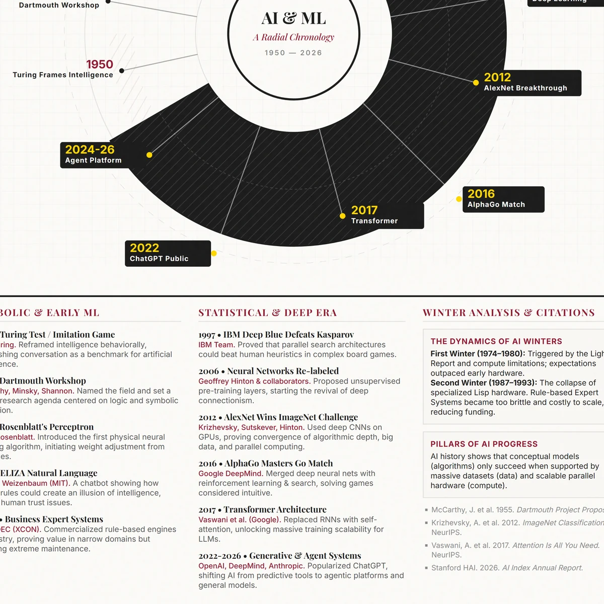

Selected Work / 01
From Symbolic Rules to Generative Systems
A visual history of AI and machine learning from 1950 to 2026.
- Year
- 2026
- Role
- Research, visual system, web presentation
- Medium
- Visual research / Information design

Context
This visual timeline traces the development of artificial intelligence and machine learning from early questions about machine intelligence to the current era of generative systems, frontier models, cloud infrastructure, and AI governance.
It brings milestones including Turing's imitation game, the Dartmouth workshop, perceptrons, ELIZA, AI winters, expert systems, Deep Blue, deep learning, AlphaGo, transformers, and ChatGPT into one radial chronology.
Research
AI history is often presented as a long list of dates. The challenge was to help beginning learners see that progress depends on several forces moving together: research ideas, available data, computing power, funding, practical use, governance, and public trust.
The timeline was revised for classmates, beginning AI/ML learners, and professionals who need a concise orientation before exploring individual technologies in more depth.
System
- 01 / ResearchGather major AI/ML milestones from course materials and credible historical sources.
- 02 / OrganizeGroup events into foundations, symbolic AI, AI winters, deep learning, generative AI, and frontier models.
- 03 / DesignUse a radial layout to show chronology and connections across technical eras.
- 04 / ReviseRefine milestone explanations, spacing, image choices, and disclosure language.
Design Decisions

The radial structure presents AI history as a connected cycle rather than a straight line. It makes periods of optimism, constraint, renewed methods, infrastructure growth, and social responsibility visible within the same composition.
Outcome
The final artifact turns a long technical history into a visual reference for class discussion, professional learning, and quick orientation. It demonstrates research synthesis, structured information design, and audience-focused technical communication.
AI assistance supported drafting and organization. The research choices, revisions, final wording, and presentation were reviewed by the student.
Sources
- AudienceBeginning AI/ML learners and professionals
- FormatVisual timeline
- CourseAIML-500 Machine Learning Fundamentals
- IBM. "Deep Blue." IBM History. Accessed July 2, 2026.
- Krizhevsky, Alex, Ilya Sutskever, and Geoffrey E. Hinton. "ImageNet Classification with Deep Convolutional Neural Networks." Advances in Neural Information Processing Systems 25 (2012).
- McCarthy, John, Marvin L. Minsky, Nathaniel Rochester, and Claude E. Shannon. "A Proposal for the Dartmouth Summer Research Project on Artificial Intelligence." 1955.
- OpenAI. "Introducing ChatGPT." November 30, 2022.
- Roser, Max. "The Brief History of Artificial Intelligence: The World Has Changed Fast-What Might Be Next?" Our World in Data, December 6, 2022.
- Turing, A. M. "Computing Machinery and Intelligence." Mind 59, no. 236 (1950): 433-460.
- Vaswani, Ashish, et al. "Attention Is All You Need." Advances in Neural Information Processing Systems 30 (2017).